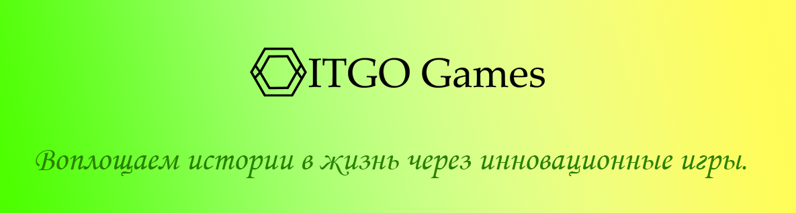

История Лиама
Сюжет
Лиам живет в уютной деревне Линдор, но мечтает о большем и стремится покинуть свои родные места, чтобы начать новую жизнь в городе FreeCiti. Однако, чтобы совершить это путешествие, ему предстоит пройти через множество испытаний и разгадать загадки, которые стоят на его пути. В ходе своего путешествия Лиам встретит различных персонажей, некоторые из которых будут помогать ему, а некоторые - противодействовать. Помимо этого, Лиам будет исследовать различные локации, собирать предметы, решать головоломки и принимать решения, которые будут влиять на ход сюжета и исход его путешествия.
Особенности игры
Приключения Лиама
Сюжет
Лиам живет в уютной деревне Линдор, но мечтает о большем и стремится покинуть свои родные места, чтобы начать новую жизнь в городе FreeCiti. Однако, чтобы совершить это путешествие, ему предстоит пройти через множество испытаний и разгадать загадки, которые стоят на его пути. В ходе своего путешествия Лиам встретит различных персонажей, некоторые из которых будут помогать ему, а некоторые - противодействовать. Помимо этого, Лиам будет исследовать различные локации, собирать предметы, решать головоломки и принимать решения, которые будут влиять на ход сюжета и исход его путешествия.
Особенности игры
Это будет ремейк игры "История Лиама" с небольшим дополнением. Он будет полностью переписан под движок Godot и переделан в платформер.